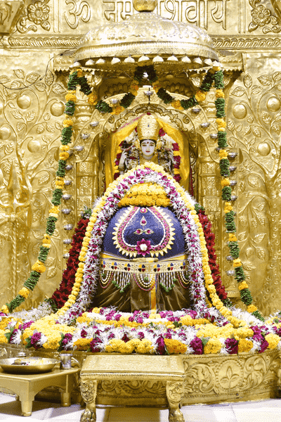
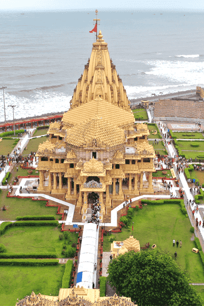
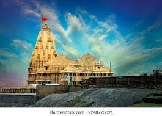
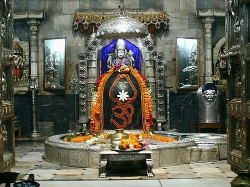
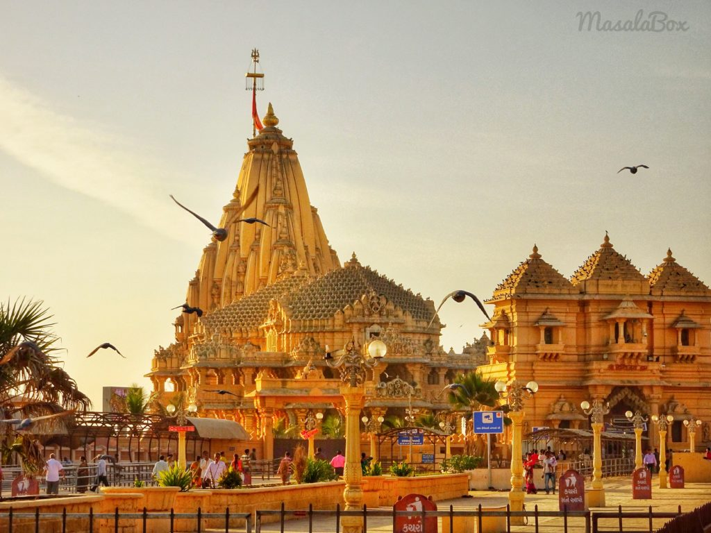
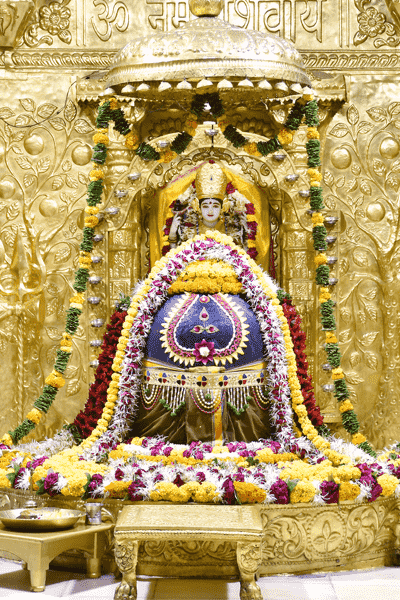
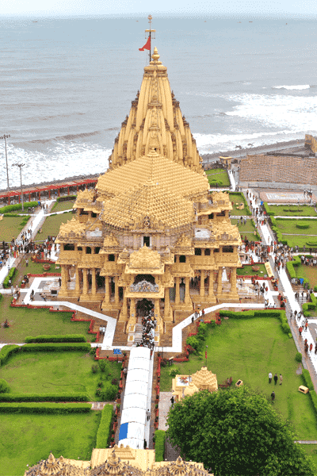
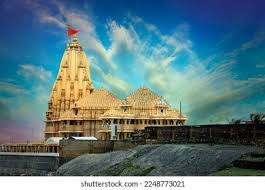
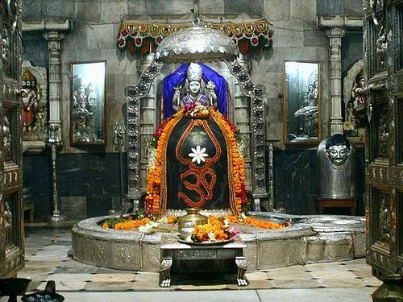
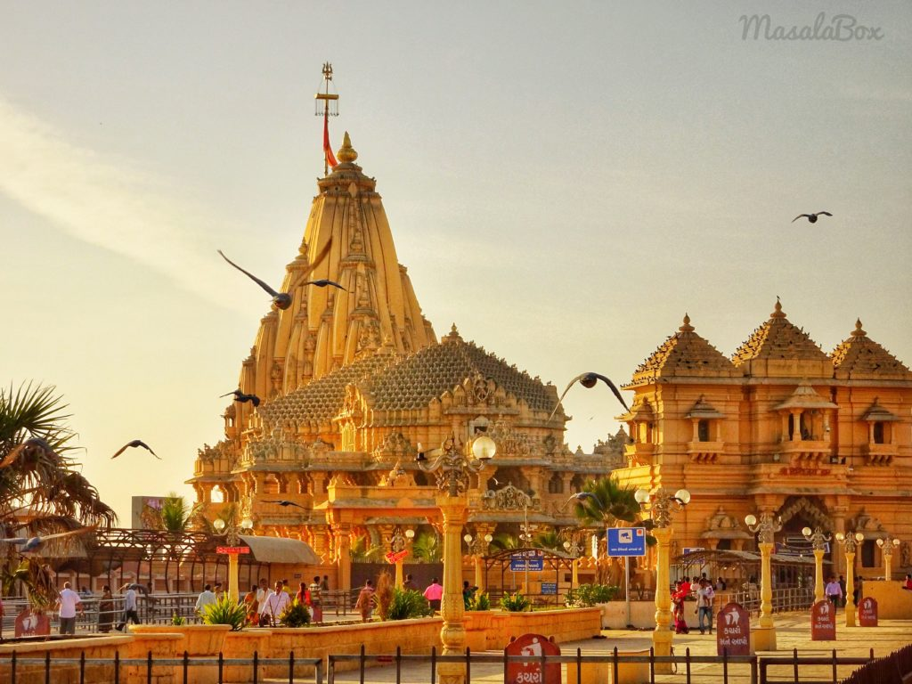

About Somnath
The Somnath temple, located in Prabhas Patan near Veraval, Gujarat, is one of the most sacred pilgrimage sites of Hinduism. Known as the first of the twelve Jyotirlinga shrines of Lord Shiva, Somnath has been destroyed and rebuilt multiple times in history, symbolizing resilience and faith.
Its current form was reconstructed in 1951, initiated by Sardar Vallabhbhai Patel. The temple architecture follows the Chalukya style and overlooks the Arabian Sea, offering a majestic view at sunrise and sunset.
Historical Timeline
Somnath finds mention in ancient texts like the Skanda Purana, and was considered a powerful seat of Shiva worship.
The temple was plundered multiple times by invaders including Mahmud of Ghazni in 1024 CE.
Post-independence, Sardar Vallabhbhai Patel initiated the reconstruction, completed in 1951 under K.M. Munshi.
Photo Gallery
 









Nearby Attractions
- Gir National Park: Famous for Asiatic lions, about 45 km away.
- Junagadh: Historic city with forts and Buddhist caves.
- Prabhas Patan Museum: Displays artifacts from Somnath’s rich history.
- Triveni Sangam: Confluence of Hiran, Kapila, and Saraswati rivers.
Visitor Tips
- Best months: October – March for pleasant weather.
- Morning & Evening aarti are must-experience rituals.
- Dress modestly; traditional attire preferred.
- Photography inside sanctum is prohibited.
Frequently Asked Questions
No, entry to Somnath temple is free for all devotees.
The temple is open from 6 AM to 9 PM, with aarti at 7 AM, 12 PM, and 7 PM.
Yes, the Somnath Trust provides online live darshan services on their official website.
Visitor Comments